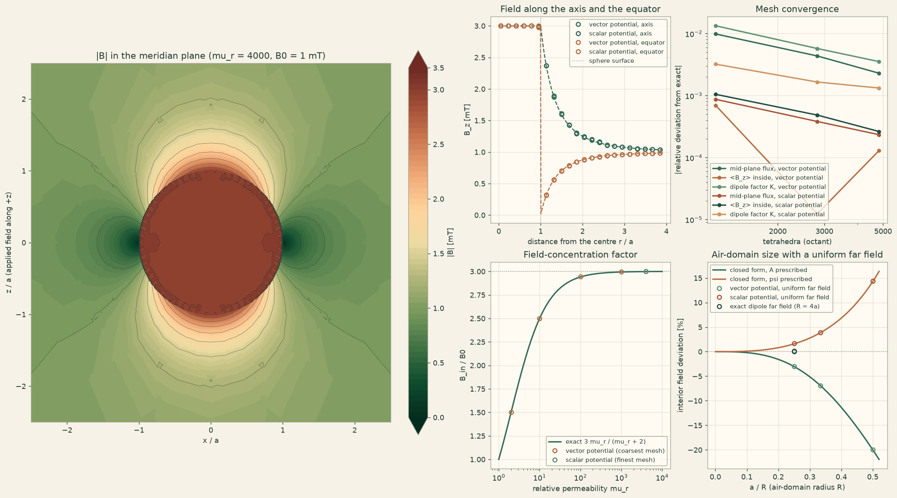
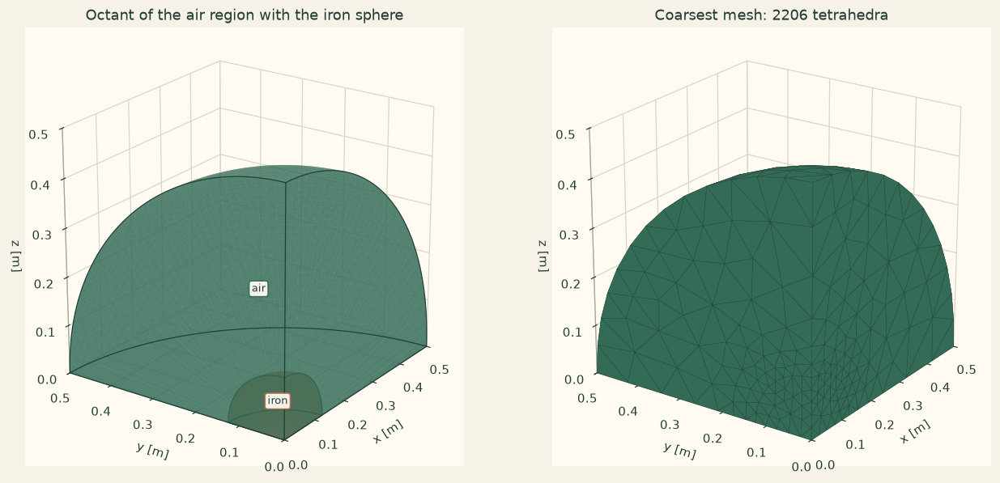

Docs › Examples › Iron sphere in a uniform magnetic field
Magnetostatics · 3D
Iron sphere in a uniform magnetic field
A highly permeable sphere placed in a uniform field: field concentration inside, dipole distortion outside, and the bias of a too-small air domain.

What it computes
The air octant and the iron sphere are read from two STEP files; the sphere is embedded in the mesh. OneSimulation solves the 3D magnetostatic problem with the vector potential on second-order Nedelec elements on three meshes and sweeps the permeability. The script that builds the STEP files comes with the notebook.
What it checks
The interior field matches the exact value 3 mu_r/(mu_r+2) B0 to 0.06 % on the finest mesh and to 0.01 % after extrapolation; over permeabilities from 2 to 4000 on the coarse mesh the deviation stays below 0.6 %.
Geometry
The notebook starts at the import of the CAD files iron_sphere_in_uniform_field.step, iron_sphere_in_uniform_field_iron.step: STEP (AP242), readable by any CAD program, with the names of the faces that the boundary conditions use. Put them next to the notebook.

The geometry script
The script iron_sphere_in_uniform_field_geometry.py builds the geometry with the CAD objects of OneSimulation and writes the files. Change a dimension there, run it, and run the notebook again.
"""Geometry of the OneSimulation example "Iron sphere in a uniform magnetic field".
Builds one octant of the air region, a sphere of radius 0.5 m around the iron sphere, with the CAD
objects of OneSimulation and writes iron_sphere_in_uniform_field.step. The file names the faces
plane_x, plane_y, plane_z and outer. The octant of the iron sphere (radius 0.125 m) goes to
iron_sphere_in_uniform_field_iron.step; the notebook embeds it in the mesh of the air region.
"""
from onesim.cad.d3 import Box, Sphere
iron_radius, air_radius = 0.125, 0.5
octant = Box(length=air_radius, width=air_radius, height=air_radius).named("plane")
air = Sphere(radius=air_radius) & octant
faces = air.boundaries
air = air.grouped(
plane_x=faces["plane.x_min"],
plane_y=faces["plane.y_min"],
plane_z=faces["plane.z_min"],
outer=faces.surface,
)
air.save("iron_sphere_in_uniform_field.step")
iron = Sphere(radius=iron_radius) & octant
iron.save("iron_sphere_in_uniform_field_iron.step")The notebook
The complete notebook, cell by cell. Run it to produce the figures and the comparison printout.
An iron sphere of radius \(a\) sits in a magnetic field that is uniform far away, \(\mathbf B_0=B_0\hat{\mathbf z}\) with \(B_0=1\) mT. There are no currents, so \(\nabla\times\mathbf H=0\) and \(\nabla\cdot\mathbf B=0\) with \(\mathbf B=\mu_0\mu_r\mathbf H\) in the iron (\(\mu_r=4000\)) and \(\mathbf B=\mu_0\mathbf H\) in the air. The permeable sphere pulls the field lines into itself: the field inside becomes almost three times the applied field, and just outside it is strongly enhanced at the poles and nearly cancelled at the equator.
The air region comes from the CAD file iron_sphere_in_uniform_field.step: one octant of a sphere of radius \(4a\) with the named faces plane_x, plane_y, plane_z and outer. The octant of the iron sphere is in iron_sphere_in_uniform_field_iron.step. The script iron_sphere_in_uniform_field_geometry.py builds both with the CAD objects of OneSimulation.
| face | condition | |---|---| | outer | vector potential of the exact far field | | plane_x, plane_y | field tangential, \(\mathbf n\times\mathbf A=0\) | | plane_z | field normal, \(\mathbf n\times\mathbf H=0\) |
Reference. The problem separates in spherical coordinates (Jackson, Classical Electrodynamics, 3rd ed., Sec. 5.11). Inside, the field is exactly uniform; outside, the applied field is superposed with the field of a dipole at the centre:
import numpy as np
from onesim.cad.exchange import load
from onesim.materials import VacuumPermeability
from onesim.meshing import LocalRefinement, TetrahedralMesher
from onesim.numerics import Numerics
from onesim.numerics.fem import FiniteElement, Nedelec
from onesim.numerics.linear import SparseDirect
from onesim.physics.magnetostatics import (
CoulombGauge,
MagneticFieldBoundary,
MagneticInsulation,
MagneticPotentialBoundary,
MagneticVectorPotential,
Magnetostatics,
)
from onesim.results.comparisons import convergence
from onesim.results.integration import mean_value
from onesim.simulation import Problem, Simulation, regionwise
from onesim.visualization import plots, theme
theme.set()Geometry and mesh
load returns the air octant with its named faces and the iron octant. The mesher embeds the iron in the mesh of the air, so that the surface of the sphere consists of cell faces. Three meshes differ in the cell size on the sphere; away from it the cells grow with the distance.
air, iron = load("iron_sphere_in_uniform_field.step"), load(
"iron_sphere_in_uniform_field_iron.step"
)
faces = air.boundaries
radius = iron.size[0]
sizes = [0.180 * radius, 0.126 * radius, 0.088 * radius]
meshes = [
TetrahedralMesher(
target_size=0.7 * radius,
embedded_regions=(iron,),
refinements=(LocalRefinement(region=iron, target_size=size),),
size_field=lambda points: np.clip(
size * (np.linalg.norm(points, axis=1) / radius) ** 2, size, 0.7 * radius
),
).generate(air)
for size in sizes
]
view = plots.Camera(elevation=22, azimuth=-145)
fig = plots.figure(1, 2, size=(14, 6.5))
plots.geometry(
[air.named("air"), iron.named("iron")],
camera=view,
title="Octant of the air region with the iron sphere",
ax=fig[0],
)
plots.mesh(
meshes[0],
groups=("all",),
legend=False,
camera=view,
title=f"Coarsest mesh: {meshes[0].cell_count} tetrahedra",
ax=fig[1],
)
plots.show()Model
The permeability is \(\mu_0\mu_r\) inside the sphere and \(\mu_0\) outside; regionwise assigns it. On the outer face the vector potential of the exact solution, \(\mathbf A=g(r)\,(-y,\,x,\,0)\), is prescribed, so the finite air region does not disturb the field.
applied, permeabilities = 1e-3, (4000.0, 1000.0, 100.0, 10.0, 2.0)
vacuum = float(VacuumPermeability().evaluate())
concentration = lambda mur: 3 * mur / (mur + 2)
dipole = lambda mur: (mur - 1) / (mur + 2)
in_sphere = lambda points: np.linalg.norm(points, axis=1) < radius
exact_potential = lambda mur: lambda x, y, z: (
0.5 * applied
+ applied * dipole(mur) * radius**3 / np.sqrt(x * x + y * y + z * z) ** 3
)[..., None] * np.stack((-y, x, 0 * x), axis=-1)
models = {
mur: Magnetostatics(
domain=air.volume,
formulation=MagneticVectorPotential(gauge=CoulombGauge()),
permeability=regionwise(
((in_sphere, vacuum * mur),), default=vacuum, unit="H/m"
),
)
for mur in permeabilities
}
problems = {
mur: Problem(
name="Iron sphere",
geometry=air,
physics=(model,),
boundary_conditions=(
MagneticPotentialBoundary(
boundary=faces.outer, physics=model, value=exact_potential(mur)
),
MagneticInsulation(boundary=faces.plane_x | faces.plane_y, physics=model),
MagneticFieldBoundary(
boundary=faces.plane_z, physics=model, value=(0.0, 0.0, 0.0)
),
),
)
for mur, model in models.items()
}
numerics = Numerics(
spatial=FiniteElement(element=Nedelec(order=2)), linear_solver=SparseDirect()
)
mur_iron = permeabilities[0]
fields = [
Simulation(problem=problems[mur_iron], mesh=mesh, numerics=numerics)
.solve_stationary()
.field(models[mur_iron].magnetic_flux_density)
for mesh in meshes
]
sweep = {
mur: Simulation(problem=problems[mur], mesh=meshes[0], numerics=numerics)
.solve_stationary()
.field(models[mur].magnetic_flux_density)
for mur in permeabilities[1:]
}Comparison with the exact solution
mean_value averages the field over the iron. The mesh study gives the observed order and the value extrapolated to zero cell size; the sweep uses the coarsest mesh.
inside = [mean_value(field, region=iron, component="z") for field in fields]
study = convergence(inside, sizes)
print(
f"exact field inside for mu_r = {mur_iron:.0f}: {1e3 * concentration(mur_iron) * applied:.5f} mT"
)
print("cell size / a tetrahedra field inside [mT] deviation")
for size, mesh, value in zip(sizes, meshes, inside):
print(
f"{size / radius:13.3f} {mesh.cell_count:12d} {1e3 * value:19.5f} {100 * (value / (concentration(mur_iron) * applied) - 1):+10.3f} %"
)
print(
f"observed order {study.order:.2f}, extrapolated {1e3 * study.extrapolated:.5f} mT "
f"({100 * (study.extrapolated / (concentration(mur_iron) * applied) - 1):+.3f} %)"
)
concentrations = {
mur_iron: inside[0] / applied,
**{
mur: mean_value(field, region=iron, component="z") / applied
for mur, field in sweep.items()
},
}
print("mu_r field inside / applied field exact")
for mur in sorted(concentrations):
print(
f"{mur:6.0f} {concentrations[mur]:23.5f} {concentration(mur):12.5f} ({100 * (concentrations[mur] / concentration(mur) - 1):+.2f} %)"
)
r = np.linspace(0.04, 3.9, 400) * radius
marks = np.linspace(0.05, 3.85, 39) * radius
exact = {
"axis": np.where(
r < radius,
concentration(mur_iron),
1 + 2 * dipole(mur_iron) * (radius / r) ** 3,
)
* applied,
"equator": np.where(
r < radius, concentration(mur_iron), 1 - dipole(mur_iron) * (radius / r) ** 3
)
* applied,
}
offset = np.full_like(marks, 1e-6 * radius)
computed = {
"axis": fields[-1].evaluate(np.column_stack((offset, offset, marks)))[:, 2],
"equator": fields[-1].evaluate(np.column_stack((marks, offset, offset)))[:, 2],
}
for line in exact:
away = np.abs(marks - radius) > 0.15 * radius
deviation = np.abs(computed[line] - np.interp(marks, r, exact[line]))[away].max()
print(
f"largest deviation on the {line} away from the surface: {100 * deviation / applied:.2f} % of the applied field"
)Figure
The field strength in the meridian plane, the field along the axis and the equator, the concentration factor against the permeability and the mesh study.
strength = lambda B, position: 1e3 * np.linalg.norm(B, axis=1)
fig = plots.figure(
layout=[["map", "map", "lines", "lines"], ["map", "map", "sweep", "study"]],
size=(16, 9.5),
)
plots.surface(
fields[-1],
boundary=faces.plane_y,
component=strength,
limits=(0.0, 3.2),
contours=13,
subdivisions=3,
symmetry={"planes": [((1, 0, 0), (0, 0, 0)), ((0, 0, 1), (0, 0, 0))]},
label="|B| [mT]",
xlimits=(-2.5 * radius, 2.5 * radius),
ylimits=(-2.5 * radius, 2.5 * radius),
title=f"Field strength in the meridian plane (mu_r = {mur_iron:.0f})",
ax=fig["map"],
)
plots.line(
points={
f"simulation, {line}": (marks / radius, 1e3 * computed[line]) for line in exact
},
reference={f"exact, {line}": (r / radius, 1e3 * exact[line]) for line in exact},
vlines={"surface of the sphere": 1.0},
xlabel="distance from the centre r / a",
ylabel="B_z [mT]",
title="Field along the axis and the equator",
ax=fig["lines"],
)
plots.line(
np.logspace(0, 4, 200),
{"exact": concentration(np.logspace(0, 4, 200))},
points={
"simulation": (
sorted(concentrations),
[concentrations[mur] for mur in sorted(concentrations)],
)
},
hlines=3.0,
scale="logx",
xlabel="relative permeability",
ylabel="field inside / applied field",
title="Field concentration",
ax=fig["sweep"],
)
plots.line(
np.array(sizes) / radius,
{
"field inside": 100
* (np.array(inside) / (concentration(mur_iron) * applied) - 1)
},
markers=True,
hlines={
"extrapolated": 100
* (study.extrapolated / (concentration(mur_iron) * applied) - 1)
},
xlabel="cell size on the sphere / a",
ylabel="deviation from the exact field [%]",
title="Mesh study",
ax=fig["study"],
)
plots.show()Going further
Change the radius of the air region in iron_sphere_in_uniform_field_geometry.py and prescribe the bare uniform field on its outer face to see what a finite air region costs; replace the sphere by an ellipsoid, whose interior field is uniform as well; or give the iron a nonlinear magnetization curve.